Hawai‘i & Pacific Island Parent Training & Information Center
The Aloha Packet
Everything a family needs to begin — gathered in one place, and free.
Leadership in Disabilities and Achievement of Hawai‘i · Supporting families since 1968
What the Aloha Packet Is
Aloha and Welcome to Team LDAH
Our team is here to support you and your family as you look toward resolving concerns about your child’s services in school and at home.
Since 1968, LDAH has provided support, information & referral, technical assistance, advocacy & mentoring, training, and other services to parents and families of children at risk, or with disabilities or other special needs that impact learning. Our work also supports the professionals who work with your child(ren).
LDAH programs and services are partially funded by grants and contracts, membership in our organization and private donations are critical for ensuring our services continue to be available – and free. Your membership will provide access to critical information offered through LRP Publications, a special education connection to the Office of Special Education Programs (OSEP) where current documents and literature is updated regularly to keep you informed about IDEA and 504 federal regulations.
Our hope is that you view LDAH as a valuable conduit toward improving your skills in special education and sharpening your advocacy style using LDAHs model of support.
Mahalo for contacting us to serve you as we navigate Hawai‘i’s public school system together.
Sincerely,
The Team at Leadership in Disabilities & Achievement of Hawai‘i
About LDAH & Membership
Who we are, our mission and values, the services we provide — and the membership form that helps keep them free.

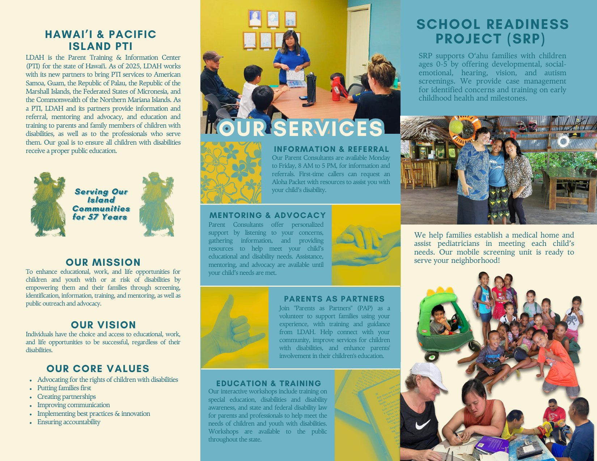
School Readiness Project
Mālama Nā Keiki. Developmental, social-emotional, hearing and vision screenings for keiki ages 0–5, with case management for anything the screening finds.
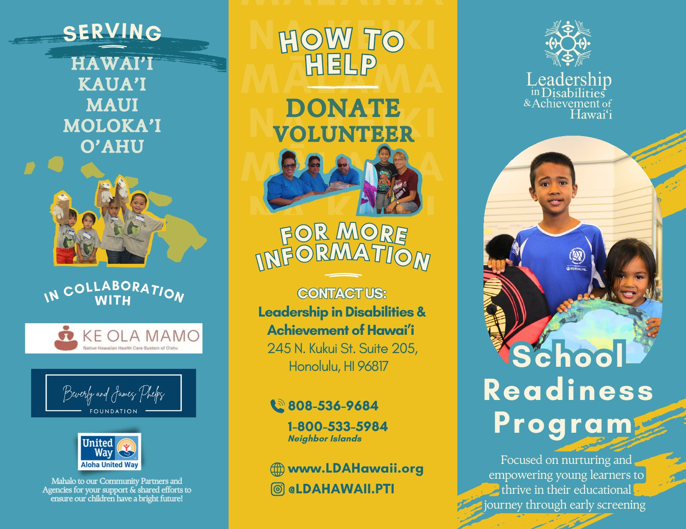
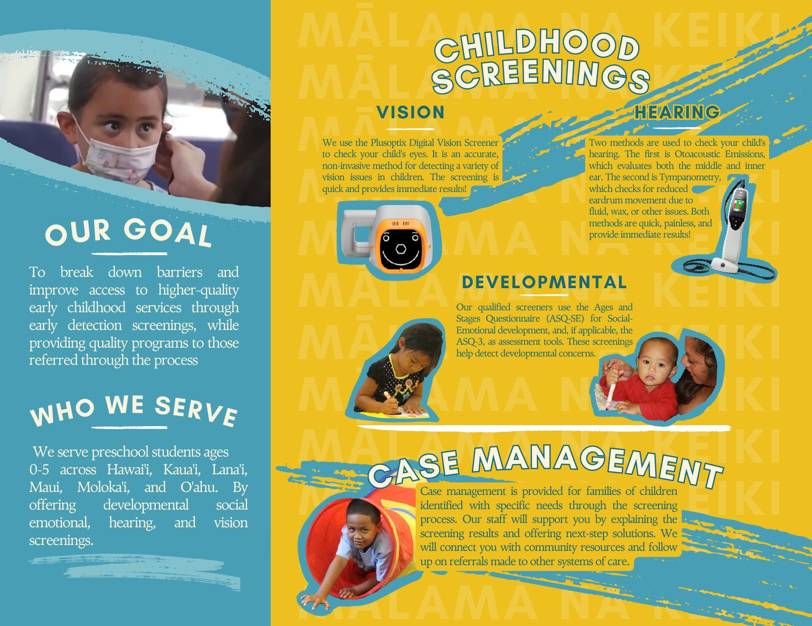
Workshops & Training
The full workshop catalogue — special education law, the evaluation process, building an IEP — free, statewide, online or face to face.
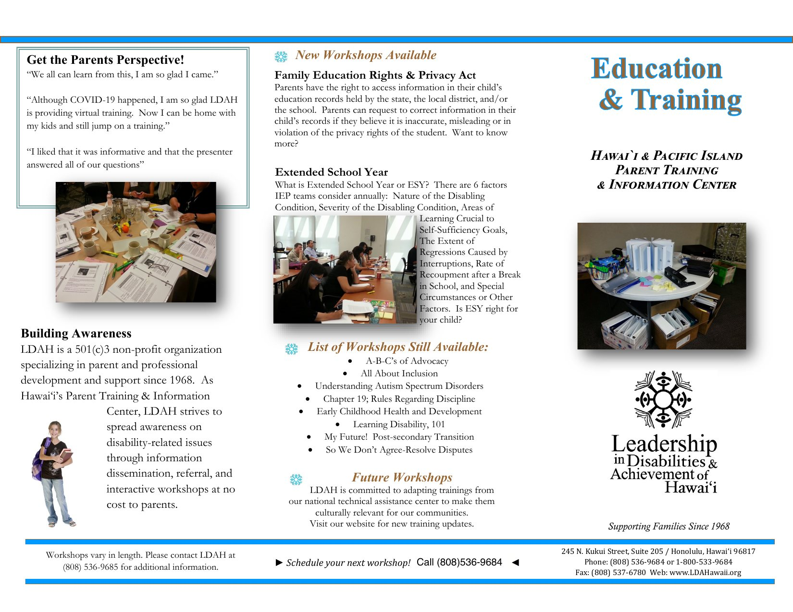
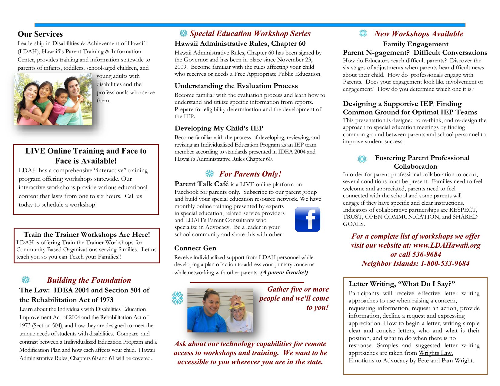
AD/HD
What AD/HD is, the three subtypes and their symptoms, and how a diagnosis is actually made.
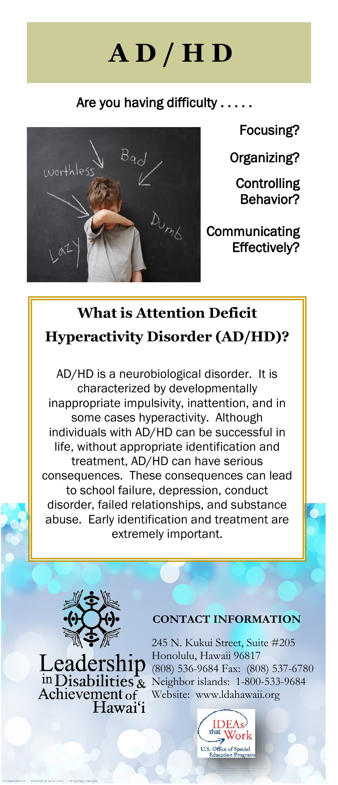
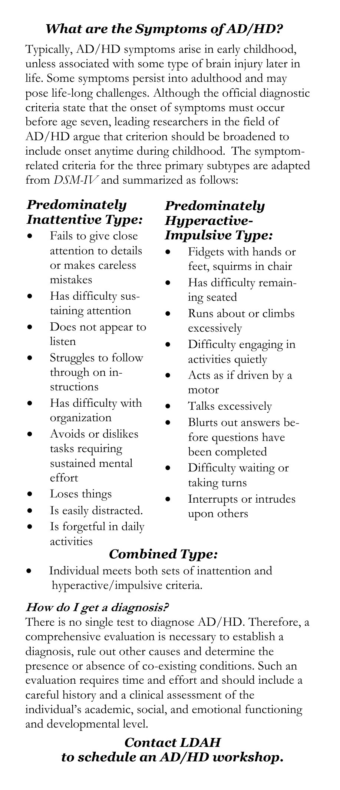
Autism Spectrum Disorder
What ASD is, the risk factors, what to watch for, and who to talk to first depending on your child’s age.
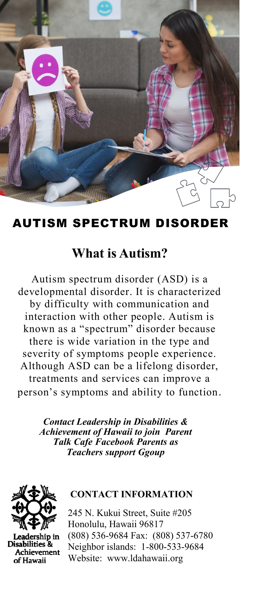
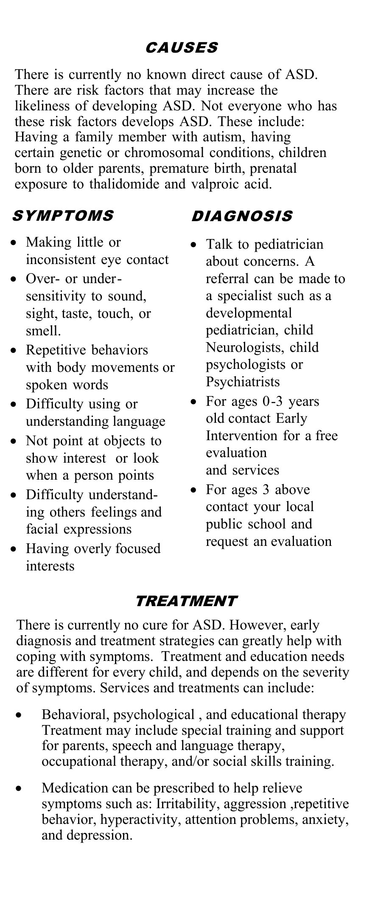
Dyslexia
A language-based learning disability — the common signs, and the rights that follow a diagnosis.
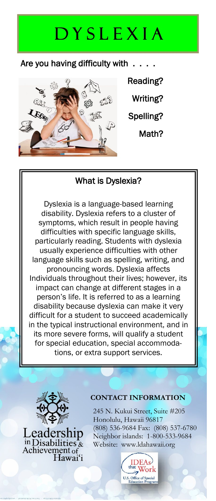
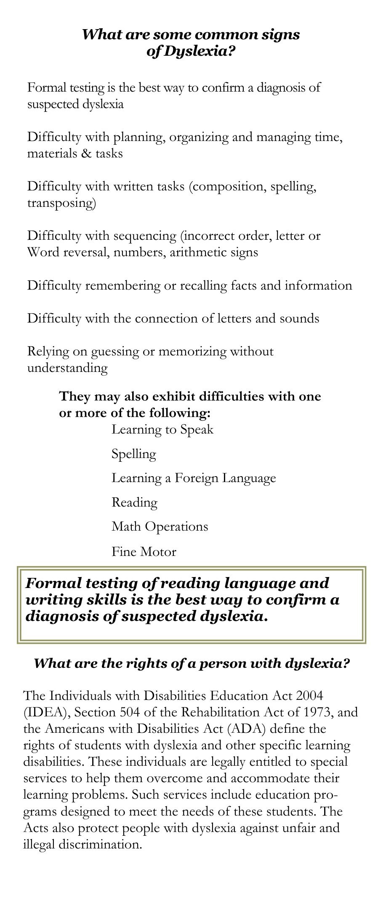
Learning Disabilities
How a learning disability affects receiving, processing, storing and responding to information — and the strategies that help.
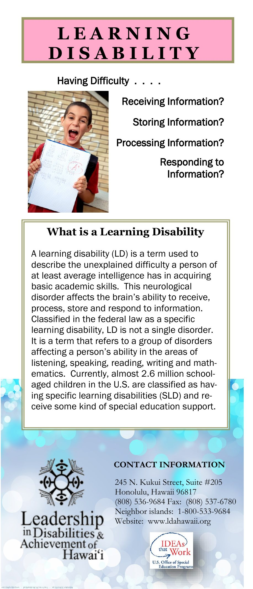
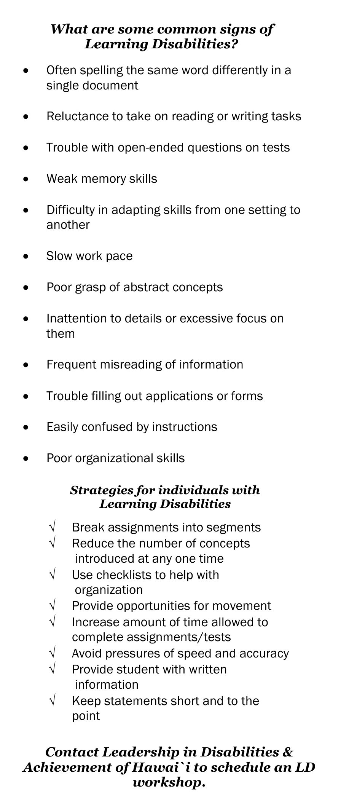